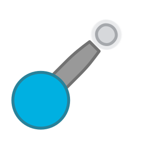

The Fearmonger is a Taurus I (by The named BOSS) that weaponizes the fear of ghosts. It upgrades from Taurus I at level 60.
Design
The Tank Itself
It resembles a Taurus I, but its barrel and tip are an exclamation mark (and its tip is a glowing white.)
The Fear Beacon
How the fear beacon looks like with its radius
How the fear beacon looks like without its radius
It has 2 circular bodies: the bottom one being team-colored and the top one being white. It also has a team-colored cross on top of both bodies.
Technical
The tank itself
It summons up to 3 fear beacons on regular fire (left-click).
The Fear Beacon
The Fear Beacon emanates a fear aura in a 10 L60 Basic body size-radius, dealing up to 10% L60 Basic damage if the tank touches the beacon, decaying with distance from the beacon. It also inflicts the Frightened effect (made by Smaragdus), which makes enemies panic and flee uncontrollably.
Disclaimer
Taurus I is The named BOSS' authorship, not mine. Ask him for permission before adding this to your private server.
His Discord username is the_named_boss.
The Frightened effect is Smaragdus' authorship, not mine. Ask them for permission before adding this to your private server.
They prefer their Discord presence to be private. Convinienetly, you can contact me via email so I can contact Smaragdus and relay their response.
Lore
This tank weaponizes the fear of ghosts.

Tier 5 Tank
Upgrades from Taurus I
Weapons:
- 1 Fear Beacon Summoner
- Up to 3 Fear Beacons
Inherits base body stats from Taurus I
Summons fear beacons that make enemies run from them.